Two designs for the same job: run a recruiting class on a phone, as a coach who never touches a player. They are not two skins of one idea. They disagree about what the coach controls — and that disagreement is the decision.
B is the better argument about what recruiting is: uncertain, delegated, and mostly out of your hands. A is the better machine for actually playing it: every action priced before you take it, and a real before-and-after when you do.
Both are strong work at the same 844 pt landscape frame, in the same floodlit visual world. Neither is a draft. But they are not interchangeable, and stitching them together is not a merge — one question has to be settled first.
Doubt is a value you can see. Your staff's week is drawn beside your own. Lists sort by the hole they fill and tell you what to do next. It teaches its own grammar before it uses it. And it refuses to let you act on screens where acting would cheapen the ceremony.
Every commit names its cost in the currency it actually spends, before you press it. Seven surfaces carry idle, committing and done, with undo and the consequence written in. Opportunity cost is spelled out in plain prose beside the number. And it covers the portal, where the roster is really built.
This is the one place the two designs are not merely different but incompatible, and everything else is downstream of it.
B says the money is weather. Its NIL screen is labelled a whole screen of numbers you may not move · zero gold, zero controls. The column headed What you may do reads READ IT down every row, and NOT EVEN READ IT against the unallocated slice. The collective that holds the money is marked not on the football account and not answerable to the coach. The screen states its own purpose: it exists so the player can see the size of what they do not control.
A says the money is your budget. A single pool of $1.24M is named at the top of the portal hub, with the tension stated outright — keeping your own people and signing someone else's compete for the same pot. Then you spend it: MATCH BOYCE · $300k / LEAVES $530k, OFFER OKON $260k / LEAVES $270k, with a running total drawn as a bar that reads pool after this page.
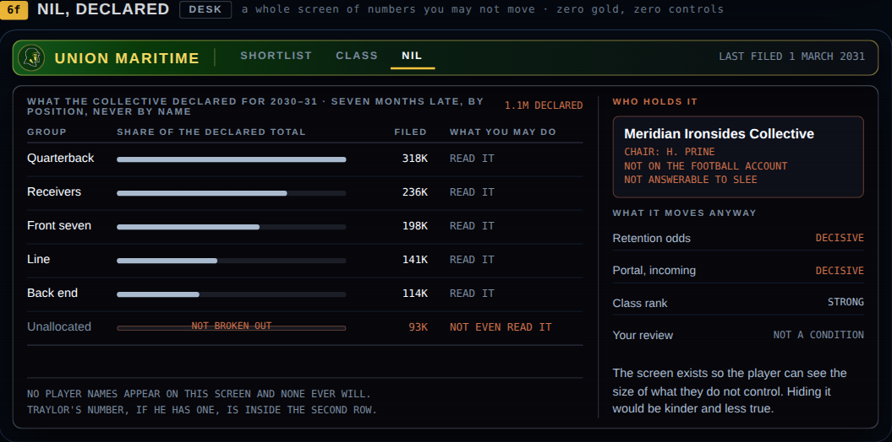
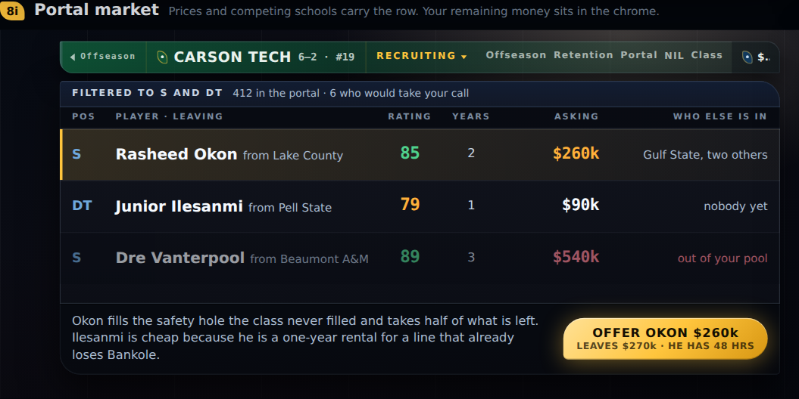
A's recruiting is a resource-allocation game whose central tension is one pot, two claims on it. B's is a persuasion game where money is a constraint you read and route around. Both are coherent. Both are good. Only one can ship, because the moment the coach can move a dollar, B's whole thesis — and its best screen — stops being true.
There is a version that keeps both: a modest pool the coach genuinely spends, sitting underneath a much larger declared figure they never touch. B's own screen already gestures at it — the unallocated slice it refuses to break out. But that is a design decision to take deliberately, not a compromise to arrive at by pasting the two sets together.
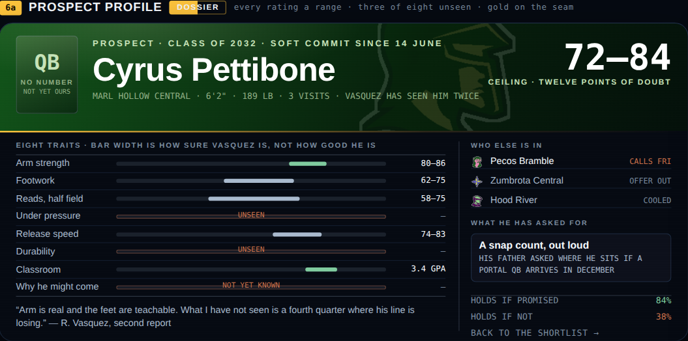
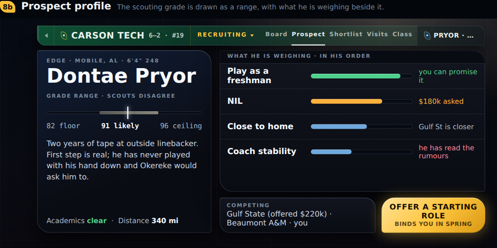
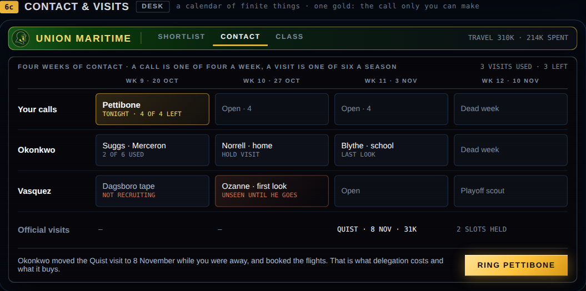
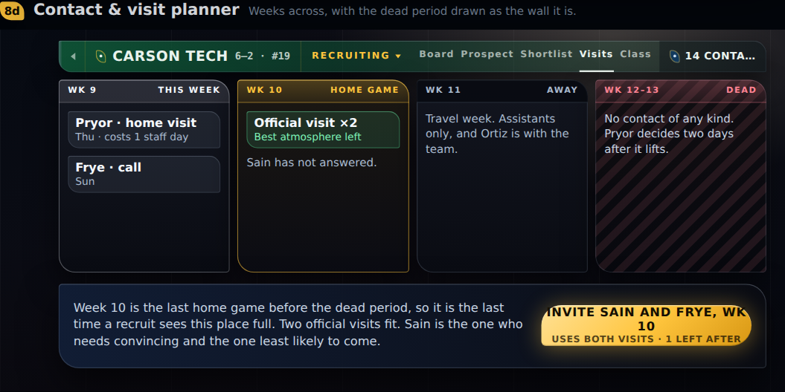
This is the most consequential craft difference in the set. The project's hard problem is what a coach does instead of playing, and delegation is one of the few real answers. B has designed that answer: your row, your coordinator's row, your scout's row, and a footnote that reads Okonkwo moved the Quist visit to 8 November while you were away, and booked the flights. That is what delegation costs and what it buys. A has written the same idea into prose — Assistants only, and Ortiz is with the team — where it cannot be inspected, compared or acted on.
A's dead-period wall is the better graphic device, and B should take it.
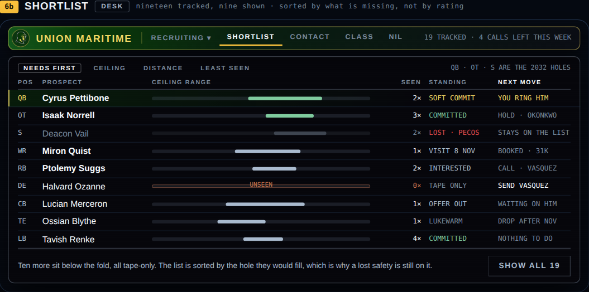
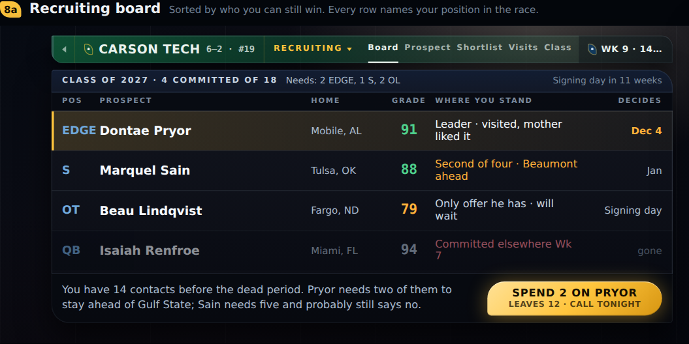
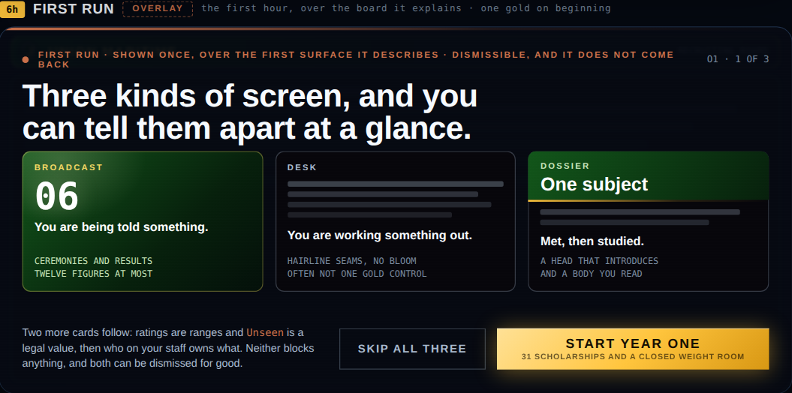
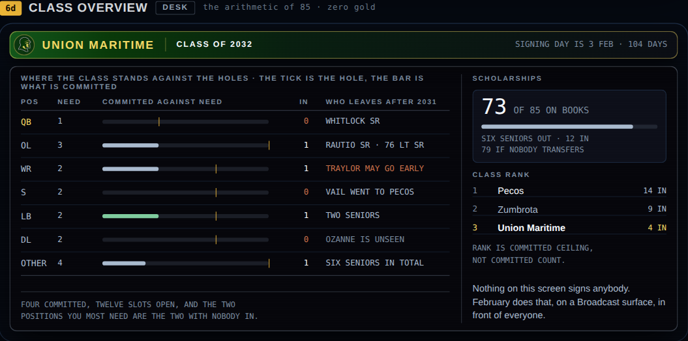
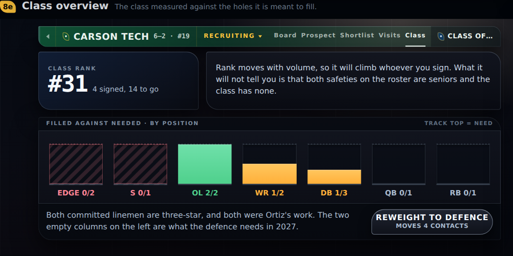
A's chart is the better picture and its warning is the better writing — Rank moves with volume, so it will climb whoever you sign. What it will not tell you is that both safeties on the roster are seniors and the class has none. Teaching the player to distrust the vanity metric on the screen that displays it is a genuinely sophisticated move.
But A never shows the 85-scholarship ceiling anywhere in the class flow. It surfaces late, as three scholarships unused on an offseason index. In a college game the roster limit is the constraint every other decision is measured against; B puts it on screen with its arithmetic worked out, and A does not.
This is the largest single gap between the two sets, and it is not a matter of polish. Every B surface is one static state. RING PETTIBONE, COMMIT THE LIST, START YEAR ONE — none of them has an after. Confirmation, cost deduction, undo, the disabled state and the error state are all simply undesigned.
A carries three states on seven of its ten surfaces: idle, committing, and done.
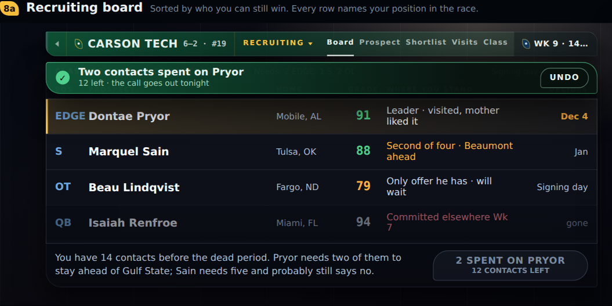
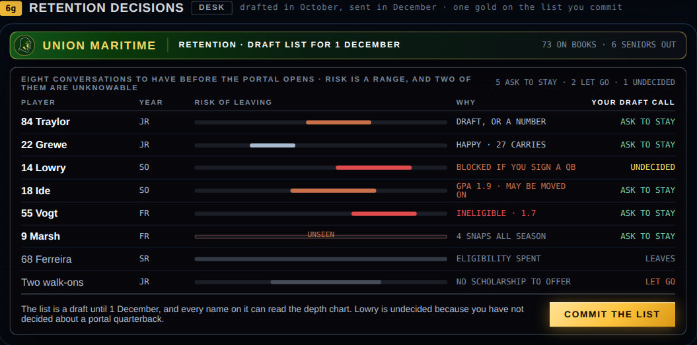
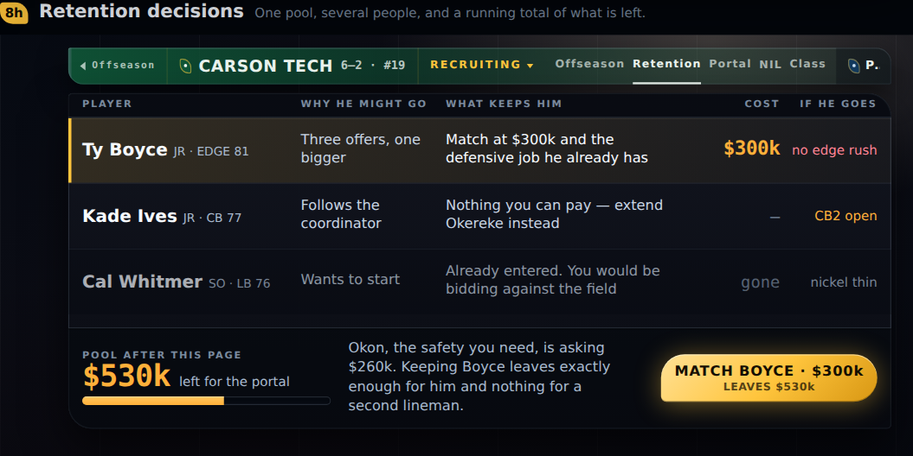
Both sets target the same 844 pt landscape frame, so type size is a product fact rather than a taste question. Measured across every text run on every recruiting surface in each set:
| Across all recruiting surfaces | B · 8 boards | A · 10 boards |
|---|---|---|
| Text runs measured | 389 | 387 |
| Smallest type | 8 px | 9 px |
| Runs under 10 px | 112 | 49 |
| Runs under 9 px | 38 | 0 |
| Median size | 10 px | 12 px |
| Runs below WCAG AA contrast | 16 | 1 |
Measured on static renders at the target frame. Gradient-filled backgrounds are approximated by averaging their opaque stops, so values on B's green navigation bar and its split-gold badge are indicative rather than exact.
B's density is deliberate — the mono annotation voice is part of how its screens read, and a great deal of what it says well, it says in 9 px capitals. But 38 runs below 9 px on a phone held at arm's length is a real accessibility exposure, and it lands hardest on exactly the material B is proudest of: the qualifying notes that explain what a bar means.
Its worst contrast case is the split-gold Dossier badge — white text over a background that is gold across half its width, so the first half of the word sits near 1.5:1. The remaining failures cluster on the navigation bar's dimmed labels and its right-hand status readout, all at 10 px. A's single failure is one 9 px annotation label reading TRACK TOP = NEED.
Neither set should win whole. The pieces worth keeping are unusually easy to name, because in almost every case each design's weakness is the other's strongest screen.
Ranges everywhere, never a point value in a list. Unseen as a legal value with its own treatment. The staff grid, so delegation is a row and not a sentence. Needs-first sorting with a next-move column. The honest note about what is below the fold. The first-run overlay. The 85 with its arithmetic shown. And the refusal to put a commit on screens where the ceremony belongs elsewhere.
The priced button, above everything — act, cost and remainder on one control. The three-state commit with undo and a stated reversibility. Opportunity cost written in prose beside the figure. The lever-map profile: what the recruit is weighing, in his order, marked by whether you control it. The dead-period wall. The portal surfaces. And the warning that teaches the player to distrust the class ranking.
Does the coach spend NIL money, or only read it? Everything above assumes that question gets answered first. If the money is weather, A's portal market, retention screen and priced dollar buttons all have to be rebuilt around a currency the player does not hold. If the money is a budget, B's best screen stops being true and its NIL surface has to become a control panel. There is no order of work that avoids choosing.